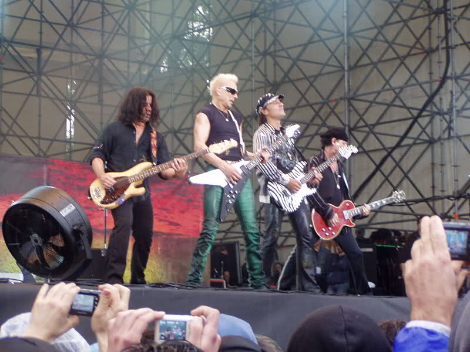

Later days (1992-2009)

In 1993, Scorpions released Face the Heat. Bass was handled by Ralph Rieckermann. For the recording process, Scorpions brought in producer Bruce Fairbairn. The album's sound was more metal than melodic and divided the band's fan base. Many "headbangers" responded positively to the album while many longtime fans were put off. Neither the hard rock single "Alien Nation" nor the ballad "Under The Same Sun" came close to matching the success of "Wind of Change". Face the Heat was a moderate success. In 1995, a new album, Live Bites, was produced. The disc documented retro live performances from their Savage Amusement Tour in 1988, all the way through the Face the Heat Tour in 1994. While the album had a technologically cleaner sound in comparison to their best-selling live album, World Wide Live, it was not as successful.
Prior to recording their 13th studio album, 1996s Pure Instinct, drummer Herman Rarebell left the band to set up a recording label. Curt Cress took charge of the drumsticks for the album before Kentucky-born James Kottak took over permanently. Many feel Pure Instinct is a response to the complaints levied against Face the Heat. The album had many ballads. Still, the album's singles "Wild Child" and the soothing ballad "You and I" both enjoyed moderate success.
1999 saw the release of Eye II Eye and a significant change in the band's style, mixing in elements of pop and techno. While the album was slickly produced, fans were unsure what to make of the band, responding negatively to almost everything from pop-soul backup singers to the electronic drums present on several songs. The video to the album's first European single, "To Be No. 1", featured a Monica Lewinsky look-alike which did little to improve its popularity.
The following year, Scorpions had an artistic collaboration with the Berlin Philharmonic that resulted in a 10-song album named Moment of Glory. The album went a long way toward rebuilding the band's reputation after the harsh criticism of Eye II Eye. However, critics accused them of following on the coattails of Metallica's similar collaboration (S&M) with the San Francisco Symphony which had been released the previous year, even though the orchestra had first approached Scorpions with the idea in 1995.
In 2001, Scorpions released Acoustica, a live unplugged album featuring acoustic reworkings of the band's biggest hits, plus new tracks. While appreciated by fans, the lack of a new studio album was frustrating to some, and Acoustica did little to return the band to the spotlight.
In 2004, the band released Unbreakable, an album that was hailed by critics as a long-awaited return to form. The album was the heaviest the band had released since Face the Heat, and fans responded well to tracks such as "New Generation", "Love 'em or Leave 'em" and "Deep and Dark". Whether a result of poor promotion by the band's label or the long time between studio releases, Unbreakable received little airplay and did not chart. Scorpions toured extensively behind the album and played as 'Special Guests' with Judas Priest during the 2005 British tour-these were the Scorpions' first dates in the UK since 1999.
In early 2006, Scorpions released the DVD 1 Night in Vienna that included 14 live tracks and a complete rockumentary. In LA, the band spent about four months in the studio with producers James Michael and Desmond Child working on their new concept album titled Humanity: Hour I, which was released in late May 2007. Followed by the "Humanity World Tour".
In 2007, the band collaborated with two of their signature tracks in the video game series, "Guitar Hero." "No One Like You" was featured on the "Rocks the '80s" version of the game while "Rock You Like A Hurricane" was released on "Guitar Hero 3: Legends of Rock."
On May 14, 2007, Scorpions released Humanity - Hour I in Europe. Humanity - Hour I became available in the U.S. on August 28 on New Door Records, entering the Billboard charts at number No. 63.
In a September 2007 podcast interview, Meine said the new album was not so much a "concept album" as it was a collection of songs with a common theme. "We didn't want to make another record with songs about boys chasing girls. I mean, come on, give me a break," Meine said.
Asked in 2007 if the band was planning to release a Humanity - Hour II, Meine replied:
That is what everybody is asking. There might be. Who knows? Right now we are at the beginning of the world tour. It is exciting to play the new songs and they go very well with the classics. It is exciting that there is a whole new audience out there. There are many longtime fans but there are a lot of young kids. We just played in London and in Paris and there were young kids rocking out to songs that were written way before they were born. It is amazing. I don't want to think about Hour II right now because Hour I is so exciting. It is very inspiring to see how much the audience enjoys this new music.
Klaus Meine
On December 20, 2007, Scorpions played at a concert for the elite of Russia's security forces in the Kremlin. The concert was a celebration of the 90th anniversary of the founding of the Cheka-predecessor of the KGB. The band has claimed that they thought they were performing a Christmas concert. They have said that their concert was by no means a tribute to the Cheka, communism, or Russia's brutal past. Members of the audience included Vladimir Putin and Dmitry Medvedev.
On February 21, 2009, Scorpions received Germany's ECHO Honorary Award for lifetime achievement at Berlin's O2 World.